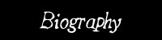

1992 From the ashes of obscure bands like
Panopticon and Acromegal, LUGUBRUM emerges,
after its vision had appeared before
Barditus during a delirium.
Zwelg leaves the band after two songs are
created and activities are derived to drinking in the woods.
1993 Barditus teams up with
Midgaard. The Lugubrum temple is built and
severe worship follows, resulting in the
‘Black Prophecies’ demo.
1994 Release of the 94 promo.
This early material shows influences of Dark Throne, Burzum,
Bathory,…
1995 Release of the atmospheric first
full-length album ‘Winterstones’,
on the clandestine label Skramasax.
1997 Release of
‘Gedachte & Geheugen’ , the
first part consisting of fast and raw ‘war metal’,
the second of dark synthesizer music.
1998 Zwelg, who had been playing in FINSTERNIS
with Svein, rejoins Lugubrum on bass.
‘De Zuivering’, recorded and mixed
in one single night of alcohol and chaos and released as a split
with Sudarium (B) on Skramasax and Lowlife records, carries by
now typical Lugubrum riffing combined with thrash elements and
introduces the term
‘Boersk Blek Metle’, which soon
catches on as definition of their own perverted style.On October
17th Lugubrum play their first and infamously drunk live concert
during the Lugburz fest at
St-Niklaas. For this occasion
Svein also joins on drums. A second (sober)
live show is given on December 26th at the
Frontline in Ghent.
1999 The legendary
‘De Totem’ album is released on
Berzerker Records (NL).
2000 A third performance , august 18th at the
Feel Estate art festival in the Backstage,
Ghent : the band is locked up in a damp cellar
for 8 hours with their instruments and fridge full of beer, the
spectacle can be followed on screen elsewhere.
2001 Barditus , having a rough time controling
his alcohol abuse and disliking new Lugubrum material, quits the
band after squealing on not more than 2 of 16 tracks on the next
masterpiece ‘Bruyne Troon’,
released on Skramasax. Midgaars takes over the
vocals.
2002 Barditus recovers and returns to Lugubrum,
carrying a crate of beer and even a bunch of guitar riffs,
resulting in ‘Al Ghemist’, a dark
and sober opus, released on LP by
Painiac records (B) and on cd by
Full Moon Productions (US) as a split with
FINSTERNIS.
2003 BloodFireDeath /
Redstream (US) re-release ‘De Totem’. Lugubrum
welcomes another member; h. (ex Urn of Might,
Thorax Serpenti) on 2nd guitar and the head office / temple /
studio is moved from Lovendegem to Ghent, from a rural
environment to an industrial one.
2004 BloodFireDeath / Redstream (US) release
‘De Vette Cuecken’, an unusual
concept-work with a cullinary theme, LP on Iron Pegasus Records
(Ger), introducing a new bass player,
Kundalingus, who replaces the once again
departed Zwelg, and featuring Bhodidharma on
saxophone.
2004 May 1st a memorable 4th live performance
is given at the Pestilence fest in
Breendonk.
2005
‘Heilige Dwazen’, the first album
to feature not only two guitarists, but also two bassists
(introducing Master Stain) is released by BFD.
In support of the album, Lugubrum make their first visit abroad
to play London’s Underworld on march 7th,
supported amongst others by Skaldic Curse. On june 28th Lugubrum
performs at Amsterdam’s Paradiso (kindly
being invited by the members of Sunn o)))) and september 24th at
the 162 , Hekelgem.
2006 Midgaars announces the launch of
Old Grey Hair Records and releases a European
cd and LP version of ‘Heilige Dwazen’ and
‘live in Amsterdam’ , a full
rendition of the Paradiso show.
2007 OGH releases
‘de ware hond’, an experimental
freeform album recorded entirely live, partly in a cabin in the
Ardennes, partly on analogue equipment. Live shows are played on
march 3rd at the K-RAA-K3 festival at
KC België, Hasselt (featuring guest
vocalists Massakre and Slosse) and
Nordhausen’s Festhalle (Ger) on april
28th . Setbacks follow, as both h. and Stain leave the band,
Lugubrum is forced to leave their HQ and the remaining members
Barditus, Midgaars and Svein fall under a mysterious and serious
spell of illness. Only partly recovered, a new temple is built
from the ground up and Noctiz (ex Gotmoor,
Paragon Impure,...) is recruted on bass and a live performance
is given at the final
Waking The Dead Festival at
Arnhem’s Goudvishal on december 22nd.
2008 OGH releases the acclaimed
‘albino de Congo’, probably the
best Black Metal album ever recorded in Congo,
a definitive highlight in Lugubrum’s career, after which
the band decide to take a well earned break. The album is
presented at Paradox, Tilburg (NL) on may 28th,
at JH Kadee, Bornem on july 18th and on a mini
tour of Finland with Urfaust,
september 5 (Tampere), 6
(Kouvola), and 7th
(Helsinki).
2009 Lugubrum play at
Sinister Howling Fest at
Speyer (Ger) on september 19th.
Those Opposed Records (France) releases the
N.O.I.R. split LP, on which Lugubrum is
featured with 3 live tracks.
2010 A new album,
'FACE LION FACE OIGNON', is recorded in an
underground studio, built in an old wine cellar. The album
concept is based on the French campaign in Syria in 1799.
Lugubrum play at
De Lochtink ,Eeklo (B) with Urfaust and
Alkerdeel on may 8th.
2011 Live shows are played at
Le Pixi, Paris on february 19th,
Iglerock, Valenciennes (Fr) on march 19th and
Den Halm, Oppuurs (B) on may 28th .
'Face Lion Face Oignon' LP is released by
Aphelion Productions (Scotland).
2012
'Face Lion Face Oignon' CD is released by
Those Opposed Records.
2013 Lugubrum travel to
Scotland for a wee tour! They play at
The Moorings Bar, Aberdeen on May 10th and at
Bannermans, Edinburgh on May 11th.
In june Aphelion Productions finally releases
the classic '‚De Totem', on
DLP.
On october 26th Lugubrum play another live show, at
Aurora Infernalis Fest V with
Dodheimsgard a.o. at Luxor, Arnhem (Nl).
2014 Recordings take place for the 10th full
length album, ‚'HERVAL'.
'Albino de Congo' LP is released by
Aphelion Productions.
Barditus announces his
retirement from Lugubrum!
The band will continue their exploration as a
trio. Midgaars takes over the vocals on
‚Herval’.
2015 LUGUBRUM trio play
'‚Herval' at
Veneration of the Dead 3, Baroeg, Rotterdam on
April 4th, at the sweaty Kinky Star in their
hometown Ghent on june 28th and at
Het Bos, Antwerp on october 31st.
LUGUBRUM trio - ‚'Herval' LP is released
by Aphelion Productions‚ along with
'‚Live in Amsterdam' LP and
‚'Winterstones' LP (20 years after
it’s original release!)
Vàn Records (Ger) releases the
Lugubrum / Urfaust - Het Aalschuim der Natie split
7”, after an idea that was born on the Finland tour in
2008.
'‚Herval' and
'‚Winterstones' are released on
CD by
Those Opposed Records.
2016 No less than four live shows are played :
Namur (with Heretic, Spermafrost and Pox) on
feb 5th, Roadburn festival on april 16th,
Vooruit Gent (with Sunn o)))), june 15th,
Radiant Art Festival Liège (with a.o.
Urfaust, Countess, The Spirit Cabinet ) on july 9th.
David Chiaradia brews the first
Lugubrum beer; VOOS, A strong,
spicy tripel with a gentle touch of banana, a hint at the
Belgium’s colonial past.
2017 In march, recordings for a new album
‚'Wakar Cartel’ take place at
Boma Studio, Ghent.
Aphelion Productions releases
'De Zuivering' LP.
Lugubrum trio play at Ieperfest, august
11-13th.
LUGUBRUM trio - WAKAR CARTEL is released on the
last day of the year by
Aphelion Productions (LP) and
Those Opposed Records (CD).
